Разрабатываем идеальный стройгенплан

В прошлом уроке вы освоили основные понятия ППР, научились отличать полный ППР от неполного и узнали, в каких ситуациях используют эти документы.
На этом уроке эксперт Высшей инженерной школы подробно объяснит, что нужно указывать в строительном генеральном плане и на примерах покажет, как и в каком порядке разрабатывать документ.
В конце урока закрепите знания на интерактивном тренажере.
Что такое строительный генеральный план (СГП)
Начнем с определения.
Стройгенплан (СГП) – генеральный план строительной площадки, на котором показаны:
- существующие объекты (здания, сооружения и пр.);
- возводимые объекты: постоянные (проектируемые здания и сооружения) и временные (дороги, ограждения, инженерные сети и пр.);
- основные строительные машины и механизмы;
- объекты строительного хозяйства (бытовой городок, мойка колес, складские площадки и пр.)
СГП предназначен для организации производства работ с учетом соблюдения требований безопасности труда.
Когда разрабатывать СГП в составе ППР обязательно
Состав ППР регламентировали СП 48.13330.2019. Стройгенплан входит в состав ППР. Но есть исключения, о которых расскажем в примере:
Пример. Когда по условиям договора, подрядчик должен разработать ППР на отдельный вид работ.
Например, проводят монтаж системы отопления внутри здания. На данный вид работ достаточно разработки технологической карты. В ее состав не входит СГП. Но так как по условиям договора нужен ППР или заказчик требует ППР, придерживайтесь правил и состава ППР.
СГП в классическом виде не нужен, так как устройство системы отопления проходит внутри здания.
Как поступить в таком случае?
- Оформить ППР без СГП. Условие: ППР согласует заказчик.
- Оформить СГП нестандартного наполнения: например, показать планировки здания, указать в каких помещениях устраивают временные склады, отметить местоположение противопожарного инвентаря.
- Использовать стройгенплан из раздела ПОС, адаптировать к видам работ и приложить его к ППР. Например, убрать подъемные сооружения, если их не используют в работе.
Когда используют стройгенплан из раздела ПОС для ППР
Разберем этот вопрос подробнее. Когда СГП разрабатывают в составе ПОС, в нем решают задачи по организации строительства всего объекта или комплекса, а когда разрабатывают СГП в составе ППР – одного объекта, этапа или вида работ.
Рассмотрите таблицу с примером:
| СГП в составе ПОС | СГП в составе ППР |
| СГП охватывает все здания и сооружения, все инженерные сети, а также все виды работ. | СГП охватывает: здание, сооружение, инженерную сеть или вид работ. Например, ППР на устройство фундамента корпуса №1 охватывает только корпус №1 и этап по устройству фундамента. |
Стройгенплан, который входит в состав ПОС, разрабатывают в составе проектной документации, он может отличаться от фактической ситуации на объекте.
СГП в составе ППР должен быть детализирован и полностью адаптирован к реальной ситуации на объекте.
Строительная техника в ППР отличается от ПОС, может также отличаться и количество кранов, их местоположение, опасные зоны и зоны работ, временные дороги, могут быть другой конструкции.
Примечание. Условия отклонения от проектной документации прописали в ч. 7 ст.52 ГрК РФ.
Изменения, которые вносят в СГП предварительно согласовывают и утверждают.
Пример
Изменения в ПОС вносят редко, это может происходить на основании ППР «постфактум». ППР напрямую влияет на безопасность работ. Предположим, на объекте происходит несчастный случай и по результатам расследования выясняют, что причина – неправильно выбранный кран. Например, в ПОС использовали кран с другими характеристиками. Виноват будет подрядчик.
Состав стройгенплана
Состав СГП зависит от объема ППР (СП 48.13330.2019).
ППР в полном объеме разрабатывают при строительстве:
- на городской территории,
- на территории действующих предприятий,
- в сложных природных и геологических условиях,
- особо опасных, уникальных и технически сложных объектов.
В остальных случаях ППР разрабатывают в неполном объеме.
Давайте проанализируем, что входит в состав СГП для ППР в полном и неполном объеме.
Состав СГП для ППР в полном объеме
- тип и конструкция ограждения строительной площадки;
- схемы размещения бытовых помещений строителей и мобильных зданий с экспликацией;
- схемы организации дорожного движения с указанием типов и конструкций внутриплощадочных дорог;
- трассировка инженерных сетей снабжения, канализации, пожаротушения и освещения;
- схемы размещения складских площадей и помещений;
- схемы привязки основных средств механизации;
- указание опасных производственных зон и зон влияния строительных машин.
Состав СГП для ППР в неполном объеме
- схемы размещения бытовых помещений строителей и мобильных зданий с экспликацией;
- схемы организации дорожного движения;
- схемы размещения складских площадей и помещений;
- схемы привязки основных средств механизации;
- указание опасных производственных зон и зон влияния строительных машин.
В каком порядке разрабатывают СГП
Размещают проектируемые и существующие здания и сооружения. За основу вы берете СГП из ПОС, который уже содержит 80% информации, мы только уточняем и дорабатываем ее.
Если производите работы по проектной документации, в которой нет раздела ПОС или проектной документация нет и вы, например, работаете только по ведомости объемов работ, то разрабатывайте СГП «с нуля»:
Предлагаем варианты:
Вариант 1. Используйте генеральный план объекта из раздела проектной документации ГП, на котором уже разместили все существующие здания и сооружения. Также, в большинстве случаев, вы уже знаете, где размещают проектируемые здания и сооружения.
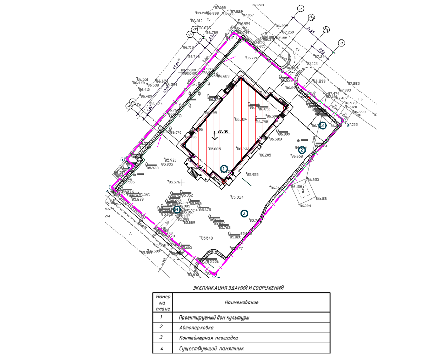
Вариант 2. Используйте Яндекс-карты или публичную кадастровую карту. При помощи таких карт ориентируйтесь на местности, а также берите за основу скриншот территории вместо генплана. Оформление СГП прописали в ГОСТ Р 21.101-2026, ГОСТ 21.204.
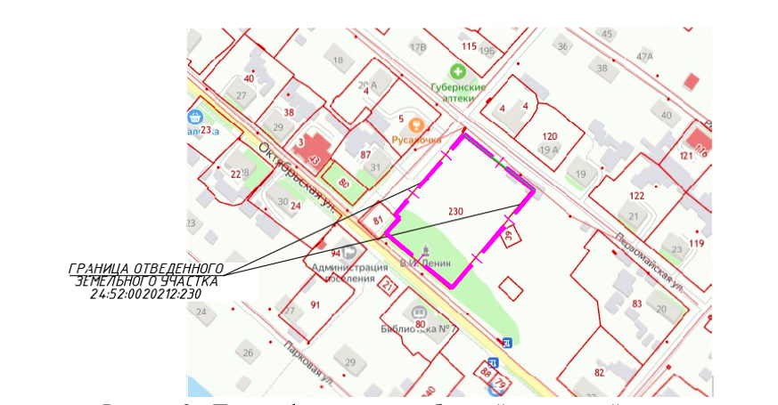
Ограждают строительную площадку. На СГП показывают план ограждения и его конструкцию.
Ограждение устанавливают по границе благоустройства территории.
По периметру строительной площадки устанавливают защитно-охранные ограждения.
В местах, где проходят люди, а также в ситуации, когда опасная зона работы крана выходит за пределы территории строительной площадки, ставят ограждение с козырьком.
Тип и конструкция ограждения прописали в требованиях ГОСТ Р 58967- 2020.
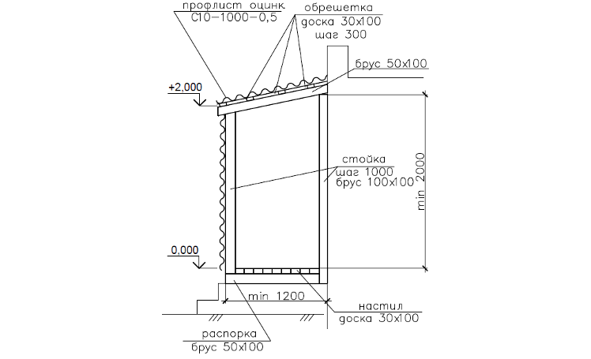
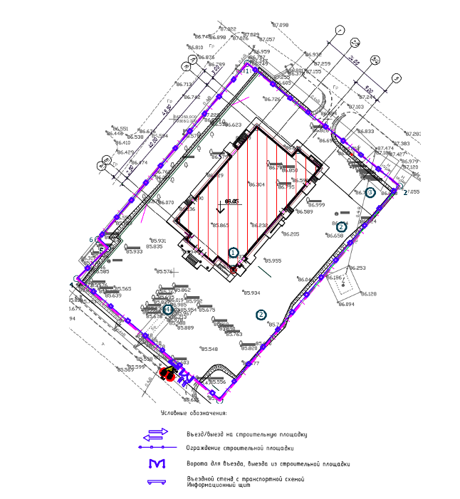
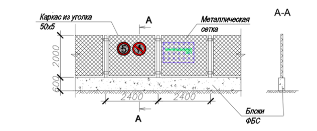
На СГП показывают въезд на территорию строительной площадки. Въезд устраивают с автомобильных дорог.
Если территория строительства занимает площадь 5 га и более, то обустраивают не менее двух въездов-выездов.
На въезде устанавливают:
- информационный щит (паспорт объекта),
- дорожные знаки,
- транспортную схему.
Размещают внутриплощадочные временные дороги. Дороги на строительной площадке обеспечивают подъезд к:
- зонам работы подъемных сооружений,
- складам,
- бытовому городку.
Размеры, которые наносят на стройгенплане:
- Ширина дорог:
- однополосное движение – 3,5м,
- двухполосное движение – 6 м. Для автомашин с грузоподъемностью более 25т ширина проезда – 8 м;
2. Радиусы поворота.
Рассмотрим подробнее правила размещения внутриплощадочных дорог.
Соблюдайте расстояния:
- между краем дорожного полотна и площадкой складирования – минимум 1м;
- между краем дорожного полотна и ограждением – минимум 1,5м;
- по горизонтали от основания откоса выемки до края дорожного полотна принимают по таблице 1 СП 49.13330.2010 – + 0,5м;
- между краем дорожного полотна и зданием – минимум 1,5м.
Схемы движения автотранспорта
- кольцевые
- тупиковые
- сквозные
Если на территории нельзя обустроить кольцевую или сквозную схему движения автотранспорта, то предусмотрите площадки для разворота размерами не менее 12х12м.
Наносите контуры внутриплощадочных дорог на СГП и указывайте направление движения автотранспорта, а для ППР в полном составе демонстрируйте конструктив дороги.
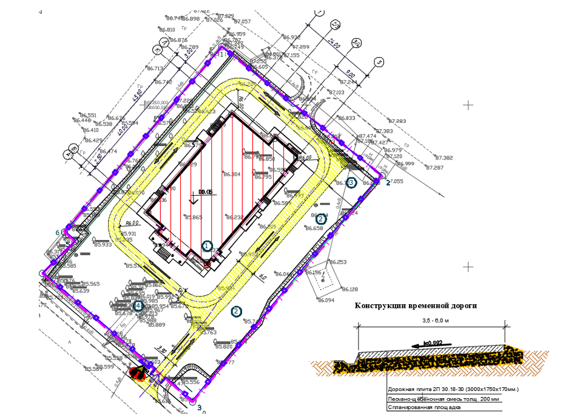
Размещают временные бытовые помещения строителей и мобильные здания (бытовой городок). На строительной площадке размещают:
Инвентарные здания санитарно-бытового назначения:
- гардеробные,
- душевые,
- помещение для обогрева,
- туалеты,
- помещения для приема пищи;
Инвентарные здания административного назначения:
- прорабские,
- пункт охраны.
Как рассчитать потребности во временных зданиях и сооружениях прописали в МДС 12-46.2008. Их количество зависит от количества рабочих кадров.
На СГП указывают:
- габариты временных зданий;
- привязку временных зданий в плане.
В экспликации временных зданий и сооружений указывают:
- номер временного здания;
- размер в плане,
- объем в натуральных измерителях (м2, м3),
- марку и конструктивную характеристику.
Рассмотрим требования к размещению бытового городка:
- здания санитарно-бытового назначения размещают вне опасных зон работы подъемных сооружений, а также не ближе 50 м от технологических производств, выделяющих пыль, вредные пары и газы;
- санитарно-бытовые помещения размещают на расстоянии не менее 24 м и не более 500 м от места выполнения работ, туалеты на расстоянии не более 50 м;
- бытовой городок располагают вблизи входов на строительную площадку;
- бытовые вагончики (блок-контейнеры) располагают в 2 этажа, не более 10 штук и площадью не более 800м2 в одной группе. Расстояние между такими группами не менее 15 м.
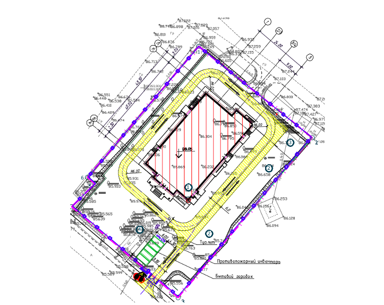
Размещают подъемные сооружения (ПС). ПС устанавливают на спланированной и подготовленной площадке, где учитывают требования по грузоподъемности, высоте подъема и вылету.
Расстояние от стрелы крана до линий электропередач соответствует требованиям п.112 Приказа Ростехнадзора от 26.11.2020 г. №461 (ФНП), таблица 3 приложение 1 ФНП, приложение 2 ФНП, приложение 9 ФНП;
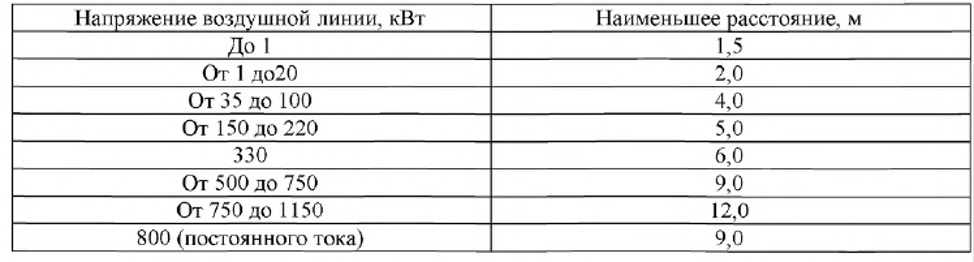
Нужно выдерживать безопасные расстояния от ПС до строений и мест складирования (п.102-137 ФНП);
ПС вблизи откосов котлованов устанавливают по правилам, которые прописали в таблице 2 приложения 1 ФНП, п. 111 ФНП.
В таблице и на схеме – эксперты Школы показали расстояние по горизонтали от основания откоса выемки до ближайшей опоры машины.
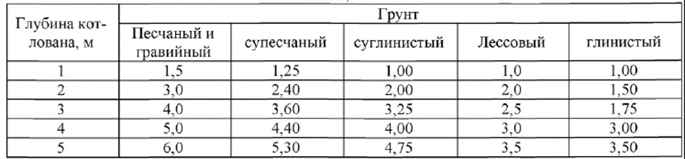
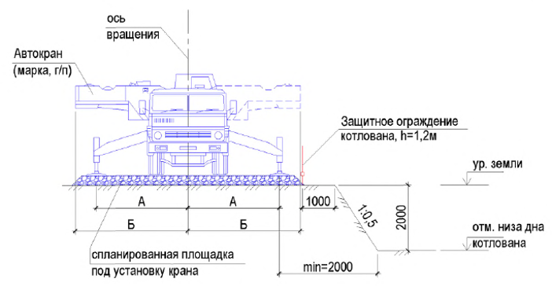
Перейдем сразу к упражнению, чтобы закрепить теорию практикой.
Если работают два и более ПС, соблюдают требования п. 160 ФНП.
На СГП показывают:
- места установки ПС (при передвижении ПС показывают стоянки);
- линии ограничения действия стрелы крана;
- опасную зону работы крана, радиусы работы стрелы крана;
- привязки ПС к осям здания.
Определяют границы опасных зон. Опасная зона работы крана – зона, в которой возможно падение груза, который перемещает кран.
Опасную зоны работы крана определяют по формуле:
Rоп.з.=В+0.5* Lmin+ Lmax+х,
где В – максимальный вылет стрелы крана (или рабочая зона работы крана), м;
Lmin – минимальный габарит груза, м;
Lmax – максимальный габарит груза, м;
х – величина отлета груза (определяется по таблице 1 приложения 1 ФНП).
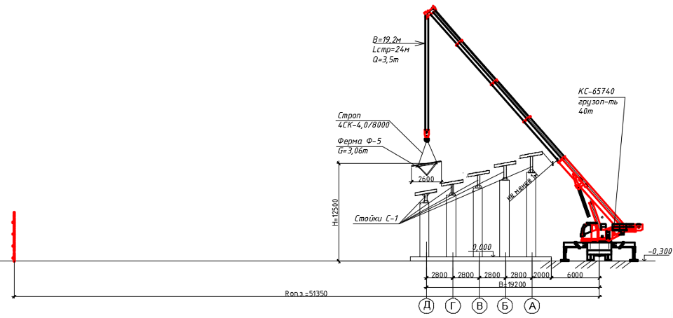
Пример
Как рассчитать опасную зону работы крана
Высота подъема: 12,5м,
Минимальный габарит груза: 2,6 м,
Максимальный габарит груза: 26,1 м (длина фермы),
Максимальный вылет стрелы крана: 19,2 м.
Величину отлета груза определяем по таблице в зависимости от высоты подъема путем интерполяции:
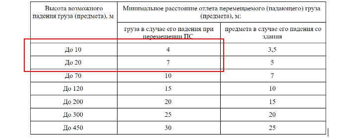
Величину отлета груза в случае его падения при перемещении ПС: 4,75 м.
Rоп.з.=19,2+0.5* 2,6+ 26,1+4,75=51,35м.
Рабочая зона крана – это область, в которой может работать кран. Границы этой области определяет траектория движения крюка крана при максимальном рабочем вылете.
Ограничивайте рабочую зону крана, когда рядом располагаются сооружения, которые препятствуют работе стрелы крана или если зона работы крана выходит за пределы строительной площадки.
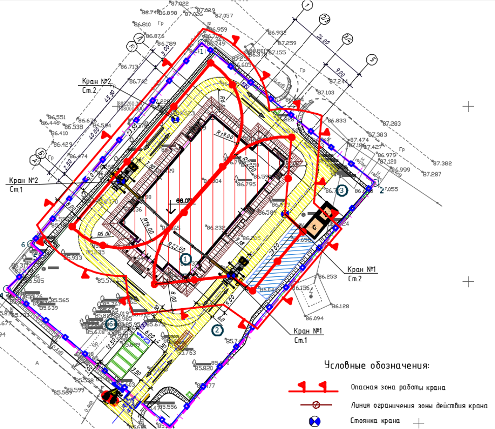
Теперь попробуйте самостоятельно рассчитать радиус опасной зоны работы крана.
Размещают площадки для складирования материалов.
| Виды складов | Вид материалов и изделий | Примеры материалов и изделий |
| Открытые (складские площадки) | Не портятся под влиянием осадков и солнечных лучей | Ж/б конструкции, металлические конструкции, кирпич и пр. |
| Полузакрытые (навесы) | Портятся от непосредственного воздействия осадков и солнечных лучей | Рулонные кровельные материалы, деревянные конструкции и пр. |
| Закрытые (н-р, контейнеры) | Нужны специальные условия для хранения (температура, влажность), а также ценные материалы и изделия | Цемент, краска, оборудование и пр. |
Открытые склады (площадки) располагайте в зоне действия стрелы крана.
Размеры складов определяют в зависимости от вида, способа хранения и количества материалов.
Основание для расчета потребности в складских площадях на строительной площадке – документ «Расчетные нормативы для составления проектов организации строительства. Часть 1» 2-е издание, дополненное, ЦНИИОМТП Госстроя СССР.
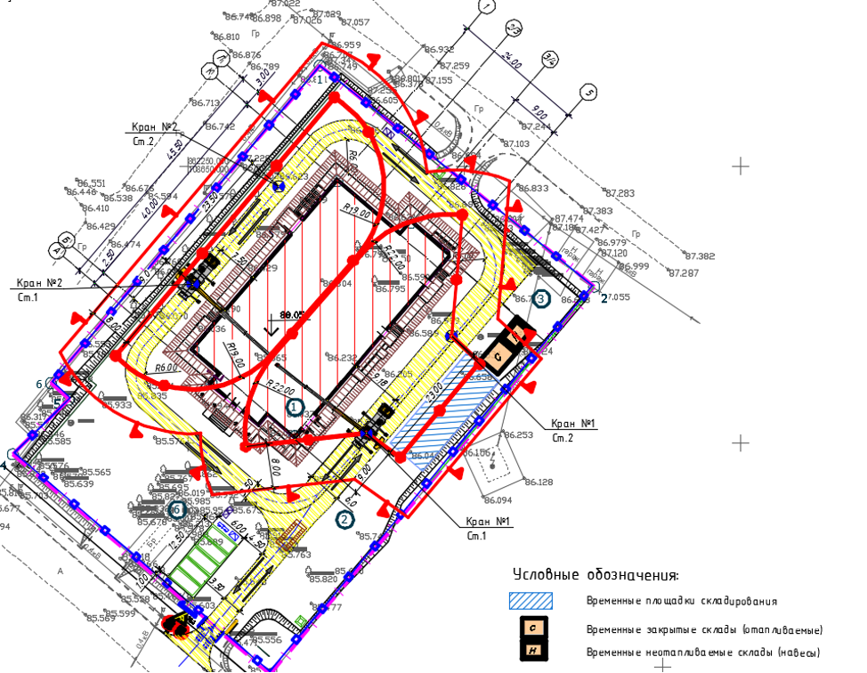
Размещают источники электроснабжения и освещения. Освещение строительной площадки соответствует требованиям ГОСТ 12.1.046-2014 (нормы освещенности по таблице 1 ГОСТ 12.1.046-2014).
Виды освещения строительных площадок:
- рабочее
- аварийное
- резервное
- аварийно-эвакуационное
- охранное
Рабочее освещение предусматривают для всех строительных площадок и участков, где работы выполняют в ночное время и сумеречное время суток.
Если бетонные работы проходят без технологических перерывов, предусматривают в этих зонах резервное освещение.
Прожекторы освещения располагают по периметру строительной площадки с шагом 45-50 м.
Потребность в электроснабжении строительной площадки определяют по мощности электроприемников с учетом коэффициента спроса и распределения электрических нагрузок по времени. Расчет прописывают в текстовой части раздела ПОС. Порядок расчета можно принять по МДС 12-46.2008.
На СГП показывают точки подключения временного электроснабжения, местоположение трансформатора или щита, а также временную электрическую сеть.
Для подключения электричества используют существующие сети.
Размещают временные инженерные сети. Расчет временных сетей водоснабжения, канализации, пожаротушения проводят в текстовой части ПОС (МДС 12-46.2008).
На СГП показывают точки подключения, трассировка сетей.
На строительную площадку завозят воду при помощи автоцистерн, либо согласовывают с эксплуатирующими организациями подключение к существующим инженерным сетям.
Необязательно показывать на СГП инженерные сети, если ППР разработан в неполном составе.
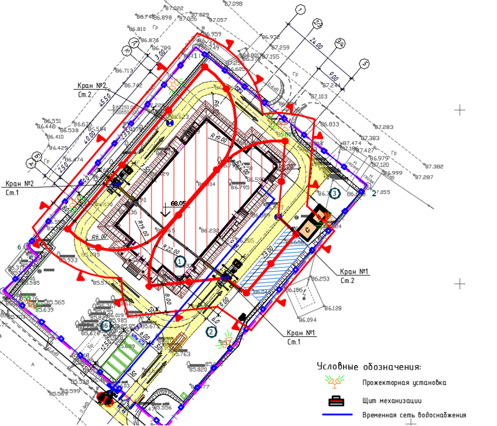
Теперь давайте проверим, насколько хорошо вы усвоили материал урока. Прочитайте утверждение ниже и определите, верное оно или ложное.
Встроенное упражнение — сохранен текст
Статическое представление
Flipcard
Текстовые фрагменты упражнения извлечены с исходной встроенной страницы. Проверка ответов и анимация здесь не работают.
- Новая статья WEB АРМ
- ППР может разрабатываться только в полном объеме (СП 48.13330.2019)
- ППР может разрабатываться в полном и неполном объеме (СП 48.13330.2019)
- Следующий вопрос
- Стройгенплан в составе ПОС разрабатывают в составе проектной документации, он может отличаться от фактической ситуации на объекте
- Если ППР разработан в неполном составе, обязательно показывать на СГП инженерные сети
- Необязательно показывать на СГП инженерные сети, если ППР разработан в неполном составе.
В следующем уроке эксперт Школы разъяснит, какие графики входят в состав ППР в полном и неполном объеме и научит заполнять графики движения трудовых ресурсов по объекту.